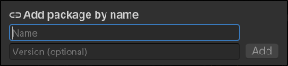

If you know the exact name of the package you want to add, you can use the Add package by name option to request it. This is a quick way to add a package from the registry without manually editing the manifest.
Specifying the version is optional. If you don’t know which version to install, or want to install the latest compatible version, enter only the package name.
Note: The latest compatible version might not be the latest published package. If there is a released package version and a newer pre-release or experimental version, Package Manager always selects the released package version.
To add a registry package by name, follow these steps:
Click the add button in the status bar.
2.此时将显示用于添加包的选项。

Select Add package by name from the add menu. A text box and an Add button appear.
Enter the package name in the first text box, such as com.unity.example.

Enter the package name and click Add
Note: If you enter a package name or version that is invalid, Package Manager warns you that it can’t find that name or version. Verify that the package name and version are correct and try again.
(Optional) If you know which version you want to install, enter the full package version in the second text box, such as 1.3.0-pre.2.
Click Add. If Unity was able to install the package successfully, the package now appears in the package list like any other package installed from the registry.
 button in the status bar.
button in the status bar.